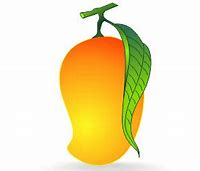

tentangbuah.com
Mangga
Definisi
Mangga atau mempelam adalah nama sejenis buah, demikian pula nama pohonnya. Mangga termasuk ke dalam genus Mangifera, yang terdiri dari 35-40 anggota dari famili Anacardiaceae.
"mangga" berasal dari bahasa Tamil, mankay, yang berarti man "pohon mangga" + kay "buah". Kata ini dibawa ke Eropa oleh orang-orang Portugis dan diserap menjadi manga (bahasa Portugis), mango (bahasa Spanyol dan Inggris) dan lainnya.
Mangga berasal dari daerah di sekitar perbatasan India dengan Burma, dan mangga telah menyebar ke Asia Tenggara sekitar 1500 tahun yang silam. Buah ini dikenal pula dalam berbagai bahasa daerah, seperti pelem atau poh (Jw.), Poh (Bl.), dan Paok (Sas.)
Khasiat Buah Mangga :
- Melancarkan pencernaan
- Mengatasi penyakit jantung
- Mengontrol kadar kolesterol
- Membuat tulang lebih sehat
- Meningkatkan daya tahan tubuh
- Mencegah asma
Daftar Harga
| Jenis Mangga | Harga | |
|---|---|---|
| Per Kilo | Per Biji | |
| Mangga Arum Manis | 27.000 | 13.500 |
| Mangga Manalagi | 15.000 | 7.500 |
| Mangga Budiraja | 24.000 | 12.000 |
| Mangga Alpukat | 170.000 | 34.000 |